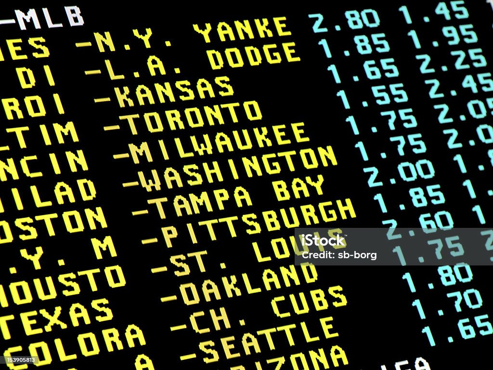
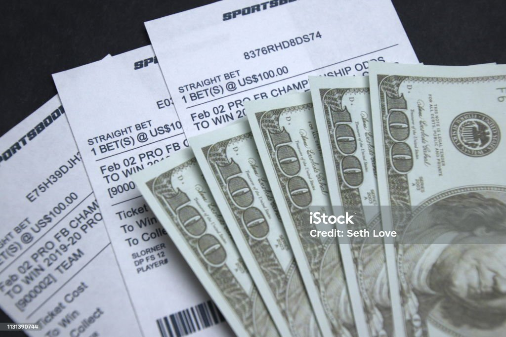
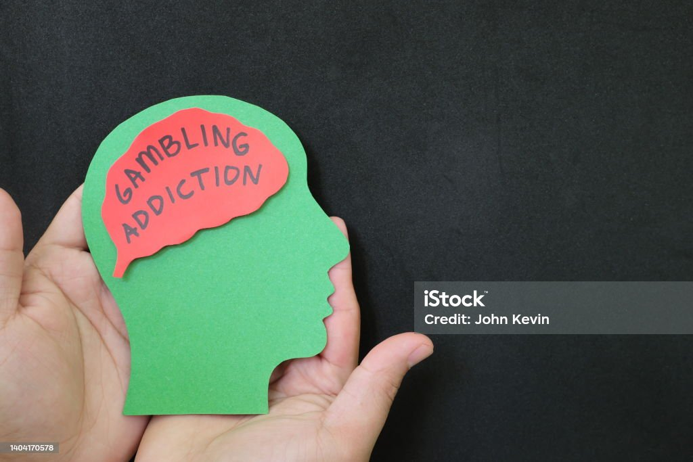

A hobby in moderation
 Sports gambling, also known as sports betting, is a popular form of wagering on the outcome of sporting events. It involves placing bets on various aspects of a sports event, such as the final score, point spreads, over/under totals, player performance, and more. Here's a breakdown of how sports gambling works: Types of Bets: Moneyline Bet: This is a straightforward bet on which team will win the game. The odds are represented as positive or negative numbers, indicating the potential payout. Point Spread Bet: The sportsbook sets a point spread to make the game more even. Bettors can wager on a team to "cover the spread" by winning by more points than the spread, or the underdog to "beat the spread" by losing by fewer points than the spread. Over/Under Bet: This bet involves predicting whether the total number of points scored in a game (combined by both teams) will be over or under a specified number. Parlays and Teasers: These are bets that involve multiple selections. A parlay combines two or more bets into one, and all selections must be correct for the bet to win. Teasers are similar but allow you to adjust the point spread in your favor, although it reduces the potential payout. Futures Bets: These are long-term bets placed on the outcome of a season or tournament, such as picking the winner of the Super Bowl or the NBA Championship.
In-Play Betting: Also known as live betting, this allows bettors to place wagers while a game is in progress. Odds change in real-time based on the game's progress. Props Bets: These bets focus on specific events or occurrences within a game, like which player will score the first touchdown or how many points a specific player will score. Hedging: Bettors may place additional bets to reduce potential losses or secure a guaranteed profit if the initial wager is successful. Odds and Payouts: Sportsbooks use odds to indicate how much you can win. Positive odds (+) show the potential profit on a $100 bet, while negative odds (-) show how much you need to bet to win $100. For example, +200 means you can win $200 on a $100 bet. Bookmakers and Sportsbooks: Bookmakers or sportsbooks are entities that accept bets and set the odds for various sports events. They make a profit by adjusting the odds in their favor. 
Bankroll Management: It's important for sports gamblers to manage their bankroll wisely. This involves setting a budget, not betting more than you can afford to lose, and using strategies to mitigate risk. Regulations: Sports gambling is subject to regulations that vary by location. Some regions have legalized and regulated sports betting, while others have restrictions or prohibitions. Research and Analysis: Successful sports bettors often do research and analysis to make informed bets. This may include studying team statistics, player performance, injuries, weather conditions, and more. It's essential for individuals to gamble responsibly and be aware of the potential risks associated with sports betting. While it can be a form of entertainment and potentially profitable for some, it can also lead to financial problems if not approached with caution. Always gamble within your means and seek help if you believe you have a gambling problem.Do you need help?
call 1-800-gamblr
